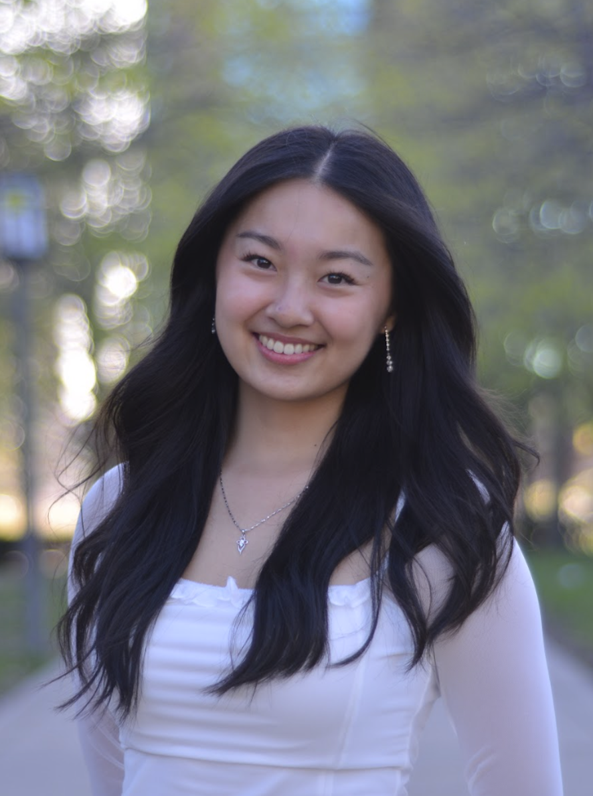
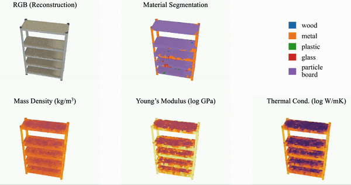
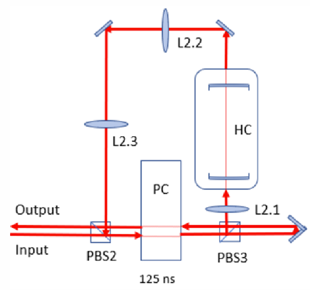
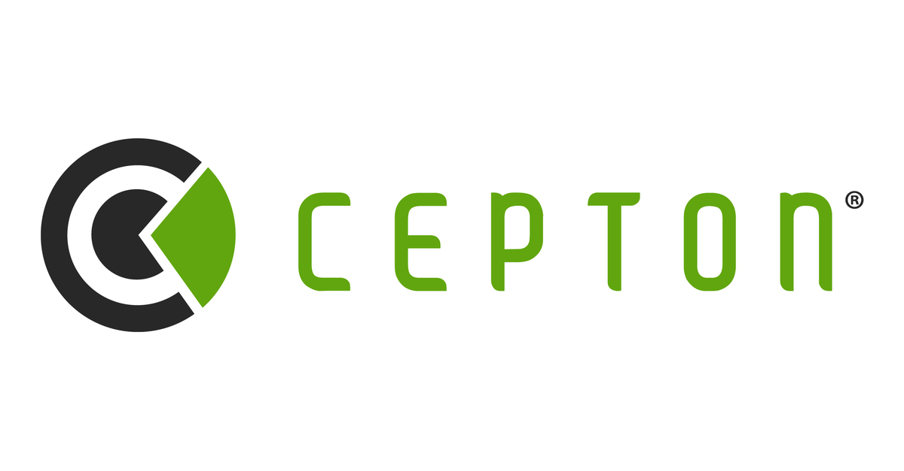

|
Emily Y. Chen I am a first year Master's student in Electrical and Computer Engineering (Intelligent Systems, Robotics, and Control track)
at the I received my Bachelor's degree in Computer Engineering from the University of Ilinois Urbana Champaign, advised by Dr. Shenlong Wang, where my senior thesis was on building a unified multi-modal representation for autonomous driving tasks. I've also done optical quantum information research, specifically in developing a quantum memory system, with Dr. Paul Kwiat's group. |
 |
{kind=link}
HonorsAwarded by the University of Illinois Urbana Champaign
|
Publications + Presentations |
|  |
NeRF2Physics: Physical Property Understanding from Language-Embedded Feature Fields |
|  |
Working Towards an Active Stabilization System for a Low-loss, Free-space Optical Quantum Memory |
Industry Experience |

|
Computer Vision Engineer Intern
|
|
|
Computer Vision Engineer Intern, Autonomous Vehicles LiDAR Perception
|
|

|
Software Engineer Intern, LiDAR Perception
|
HobbiesBadminton, running, bouldering, hiking, reading |